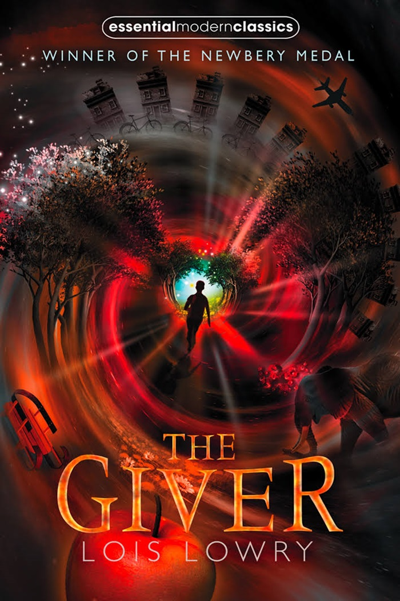
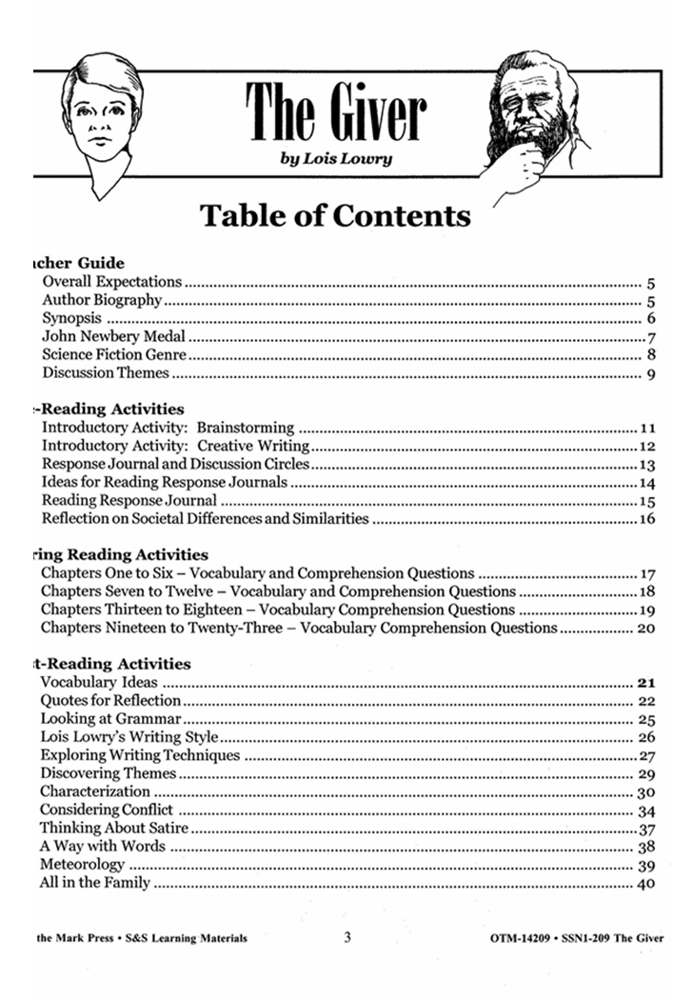

The Giver
Featured Book
Price:169.000VND
Tiltle
 REVIEW
-
The Giver, written by Lois Lowry, is a story about a society with citizens
who have no memories of its past, except for the individual known as the Receiver
of Memory. Citizens are not given freedom or choice. Without choice, the elders
of society believe they can prevent negative elements, such as war and poverty.